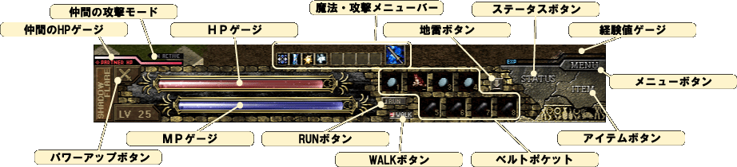
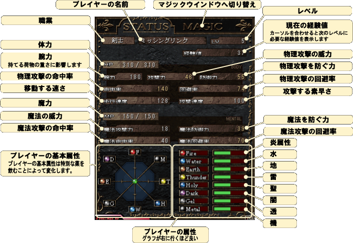
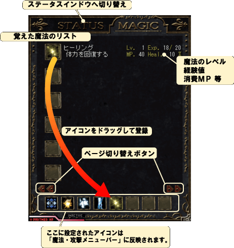
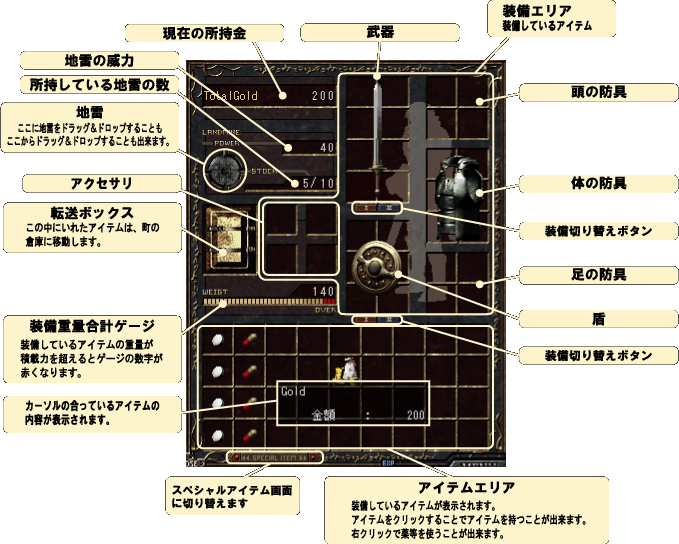
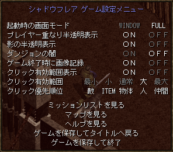
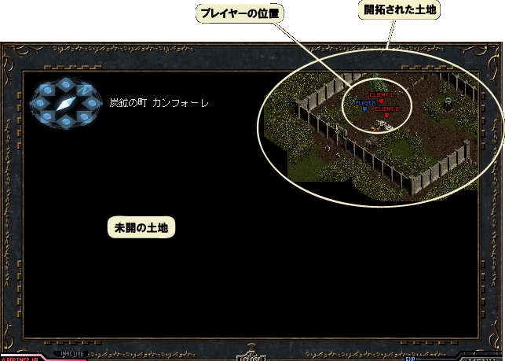
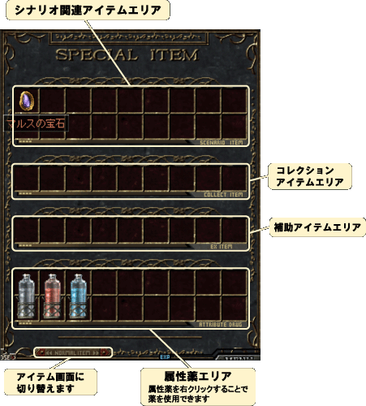
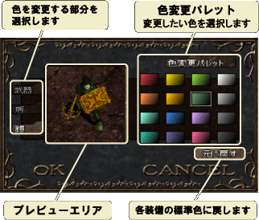

- ゲーム画面の説明 -
| ゲームパネル | ステータスウィンドウ | マジックウィンドウ |
| アイテムウィンドウ | ゲーム設定メニュー | マップウィンドウ |
| スペシャル アイテムウィンドウ |
装備色変更ウィンドウ |
・ゲームパネル・

| ＨＰゲージ | 体力です。攻撃をうけると減少し、なくなると死亡します。 |
| ＭＰゲージ | 魔力です。魔法を使うと減少し、なくなると魔法を使えなくなります。 |
| ベルトポケット | ここにタブレット等、回復系アイテムを置く事ができます。右クリックで使用できます。 |
| RUNボタン | クリックすると標準の移動方法が「走る」になります。 |
| WALKボタン | クリックすると標準の移動方法が「歩く」になります。 |
| 地雷ボタン | 地雷を持っている時、クリックするとは地雷を設置できます。 |
| ステータスボタン |
ステータスウィンドウの開閉をします。 |
| アイテムボタン | アイテムウィンドウの開閉をします。 |
| メニューボタン | ゲーム設定メニューの開閉をします。 |
| 魔法・攻撃メニューバー | マウスの右クリックに割り当てる魔法や攻撃を選びます。 アイコンをクリックして選択してください。 |
| 仲間のHPゲージ | 仲間の体力です。プレイヤーと同様に、攻撃をうけると減少し、なくなると死亡します。 |
| 仲間の攻撃モード | 仲間の攻撃モードが ACTIVE である場合は、自主的に戦います。 INACTIVE である場合はプレイヤーから命令を受けない限り戦いません。 |
| パワーアップボタン | パワーアップします。点滅している時クリックでき、一定時間で終了します。 |
| 経験値ゲージ | 敵を倒して経験値を得るとゲージが増えます。満タンになるとレベルアップします。 |
・ステータスウィンドウ・
プレイヤーの状態を表示するウィンドウです。

・マジックウィンドウ・
プレイヤーの覚えている魔法を見ることが出来ます。
また、魔法を魔法・攻撃メニューバーに登録することが出来ます。

・アイテムウィンドウ・
プレイヤーの持っているアイテムを見ることが出来ます。
装備エリアにアイテムを持っていくことで、武器や防具を装備することが出来ます。
持ちきれないアイテムは、転送ボックスから町の倉庫に送ることが出来ます。

・ゲーム設定メニュー・
ゲーム設定メニューでは様々な設定を行うことが出来ます。
また、様々な情報を診ることも出来ます。

| 起動時の画面モード | WINDOW | 次にゲームを開始するときウィンドウモードになります。 |
| FULL | 次にゲームを開始するときフル画面モードになります。 | |
| プレイヤーの重なり半透明表示 | ON | プレイヤーが壁などに隠れた時に障害物を半透明にします。 |
| OFF | プレイヤーが壁などに隠れるとプレイヤーが見えなくなります。 ※若干ゲームの動作が軽くなります。 |
|
| 影の半透明表示 | ON | 影を綺麗に表示します。 |
| OFF | 影を黒一色で表示します。 ※若干ゲームの動作が軽くなります。 |
|
| ダンジョンの闇 | ON | ダンジョンを暗く表示します。 |
| OFF | ダンジョンも普通に表示します。 ※若干ゲームの動作が軽くなります。 |
|
| ゲーム終了時に画像記録 | ON | 次回ロード時のキャラクタ選択画面に表示される画像を ゲーム終了時に自動的に記録します。 |
| OFF | ゲーム中に [Pause] キーを押すことで好きなタイミングで 画像を取り込むことができます。 |
|
| クリック有効範囲表示 | ON | クリックできる範囲を四角で表示します。 |
| OFF | マウスカーソルだけを表示します。 | |
| クリック有効範囲 | クリックできるカーソルの大きさを決めます。 | |
| クリック優先順位 | アイテムや敵などが重なっているときにクリックできる優先順位を決めます。 左側にあるほど優先順位は高くなります。 |
|
| ミッションリストを見る | 与えられたミッションとクリアしたミッションの一覧を見ることが出来ます。 | |
| マップを見る | 一度行ったことのある場所の縮小地図を見ることが出来ます。 また、オンラインモードでは他のプレイヤーの居場所を地図上で確認することが出来ます。(第二話以降) |
|
| ヘルプを見る | 操作方法などの説明を見る事ができます。 | |
| ゲームを保存してタイトルへ戻る | ゲームを保存した後、タイトル画面へ戻ります。 | |
| ゲームを保存して終了 | ゲームを保存した後、ゲームを終了します。ゲームは閉じられます。 | |
・マップウィンドウ・
マップウィンドウでは今までに行ったことのある場所の縮小地図を見ることが出来ます。
また、プレイヤーの位置も見ることが出来ます。(version 1.002.000以降)
version 1.004.000 以降では画面の半分の大きさで表示されます。

キーボードの矢印キーで縮小地図をスクロールすることが出来ます。
さらに、エンターキーを押すと元のマップ表示位置に戻ります。
・スペシャルアイテムウィンドウ・
受け渡しの出来ない特殊なアイテムを見ることが出来ます。
属性薬のみ右クリックで使用することが出来ます。(第三話以降)

・装備色変更ウィンドウ・
装備品の色を変更することが出来ます。
装備色変更は特定の商人に依頼することで出来ます。(第三話以降)
